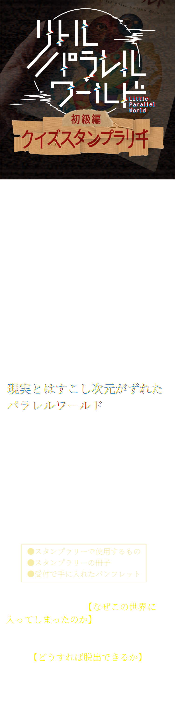
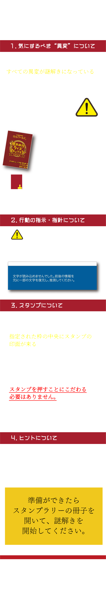
⊠にはそれぞれ漢字が当てはまる。
上下に書かれた文字の法則から、３か所の⊠の中身を考えよう。
全ての⊠に入る文字を導く必要はなさそうだ。
一番左の⊠と、右から2番目の⊠は、上下に書かれた文字のようなものをよく観察し、順番に変換して漢字を作ろう。
真ん中の⊠は、「左」の対義語を考えよう。
ただ、この「左」は上の線が欠けている。
対義語となる漢字も同様に線を欠けさせると、またさらに別の漢字に変化する。
わかったらMAPを見て行くべき場所を探そう。
一番左の⊠は、カタカナが五十音順、漢字は小学校、中学校、高校、大学と学校の頭文字をとっており、⊠の部分に入るカタカナと漢字を組み合わせると「沖」。
真ん中の⊠は、「左」の対義語として「右」が入るが、漢字の上の部分が欠けているので、同様に上の部分を欠けさせて「石」。
右から２番目の⊠は、漢数字は１つずつ増えてゆき、月などの漢字は曜日の順で変化しているので、当てはまるものを組み合わせると「垣」。
よって、「沖？？ 石垣？の家」と漢字が埋まり、これと条件が合う場所は「沖縄県 石垣島の家」となる。
色がついた丸には、それぞれカタカナが１文字ずつ入る。
上側の式は、先ほど押したスタンプと同じ枠なので、スタンプが表す内容を考えよう。
写真で隠されてしまっているが、下側の式と比較すると紫とオレンジの丸の間にも何か１文字入りそうだ。
下側の式には沖縄でよく見かける、魔よけの像の名前が入る。
スタンプの形をよく見ると、アルファベットでEP（イーピー）と書かれている。
よって、紫の丸はイ、オレンジの丸にはもともと半濁点が書かれているので、ヒが対応する。
間には「ー（伸ばし棒）」が入り、文字数的にも問題なさそうだ。
また、下側の式の写真はシーサーなので、青の丸にはシ、緑の丸にはサが対応する。
これを踏まえて、五十音表をもとに波線の言葉を考えよう。
五十音表の位置に注目し、矢印に従って文字を別のものに変換すると、言葉が出来上がる。
オレンジの丸の上には横棒が書き足されているので、変換したのちに横棒と組み合わせてカタカナにしよう。
矢印は五十音表を見たときに、その方向の１つ隣にある文字に変えることを表す。
例えば、紫の丸には上矢印がついているので、五十音表でイの上にある文字「ア」が入る。
またオレンジの丸も同様の変換をすると「フ」となるが、丸の上の横棒と組み合わせて「ラ」となる。
同様の変換をほかの丸でも行うと、答えは「アラスカ」となる。
次は「アラスカ トリンギットの家」に向かおう。
まずは正しい向きに気を付けて、ページ内の赤い三角がついた枠にだけスタンプを押そう。
その後、青いウィンドウの下に現れた漢数字を読もう。
正しく押すとこのようになり、漢数字の十二が現れる。
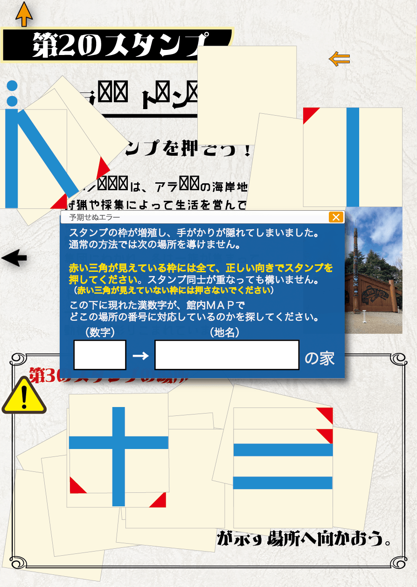
MAPで１２番の場所は「ポリネシア サモアの家」なので、そこに向かおう。
大きくなってしまった文字を読むと、次に向かう場所は「ドイツのエリア」であることがわかる。
また、「５つの色の順」や「かかれている文字」という内容から、「文字を何かの色の順で読む」と追加で情報が得られそうだ。
まずはスタンプを自分で枠内に書き写そう。
問題文の言葉を文脈が通るように並べると、
「このスタンプのマークは、
日本語で？？？？？英語に変換すると、？？？の形を表している。
→→が示す建物の中に入ろう。」
となる。
このスタンプとは、今書き写した第４のスタンプの形のことだ。
日本語と英語でそれぞれ何と言うか考えよう。
スタンプのマークは、日本語でじゅうじか(十字架)、英語でクロス（cross)と呼ぶ。
青と赤の矢印が通っている場所を読むと、「クロスうじ」（黒数字）となる。
黒数字とはなんだろうか。
ページ内をよく探してみよう。
正しくスタンプを押すとこのようになる。
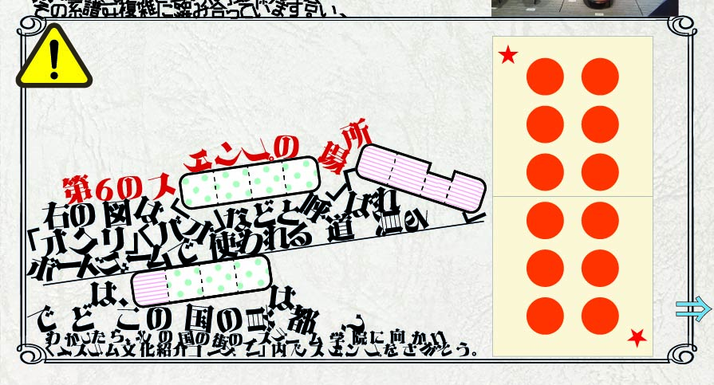
落下してしまった問題文から、この図はボードゲームの道具を表しているとわかる。
スタンプ台のすぐ右にある展示物を見て、当てはまる名称を落下した問題文の中の空欄に当てはめよう。
まずはスタンプを自分で枠内に書き写そう。
このスタンプが何を表しているかは、青いウィンドウのすぐ左側の説明文中に、漢字２文字で書かれている。
MAPのウェブページに移動し、予期せぬエラーの「エラー」という文字を長押ししよう。
ポップアップが出てくるのでその指示に従おう。
ポップアップの①の指示に従うとこのようになる。
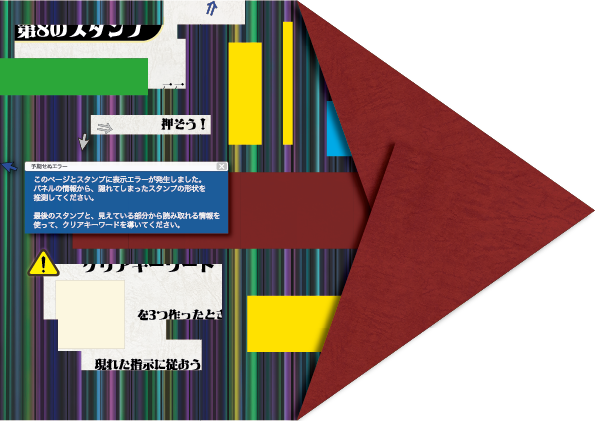
その後、このスタンプラリー内で見たエラーの順にカーソルを合わせ、同じ色の矢印の先を読んでいこう。
例えば黒い×に、第２のスタンプのページにある黒いカーソルを合わせると、黒い矢印はスタンプの2本の青い線と、2つの丸で構成された「ブ」というカタカナを指す。
これを繰り返してキーワードを導こう。
冊子を折っていくと、以下のように「文化交流」（ブンカコウリュウ）とキーワードが浮かぶ。
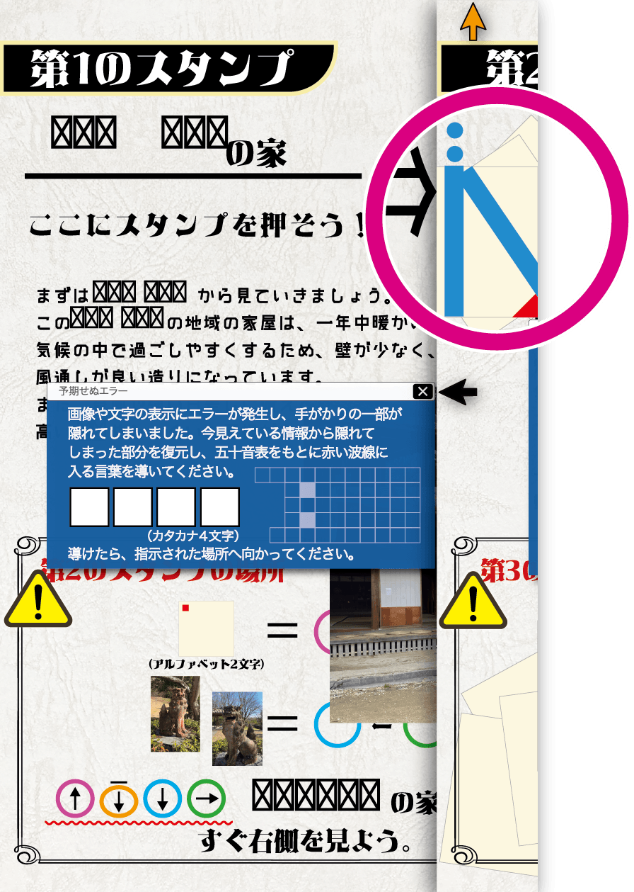
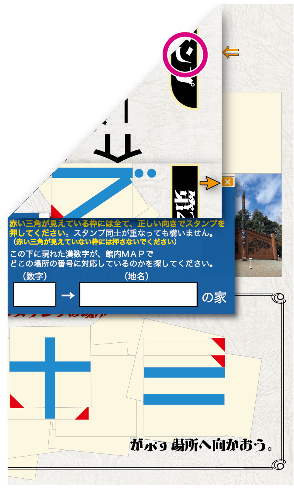
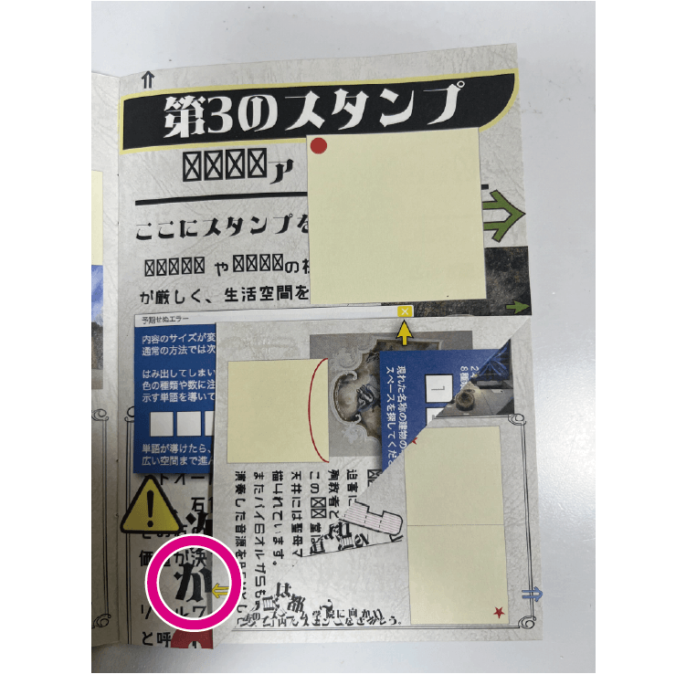
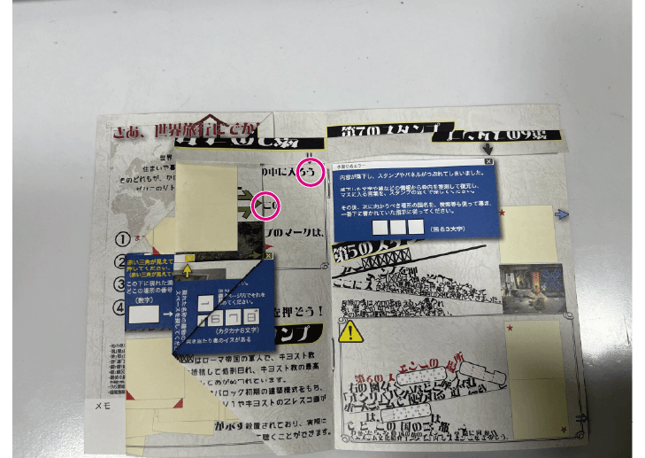
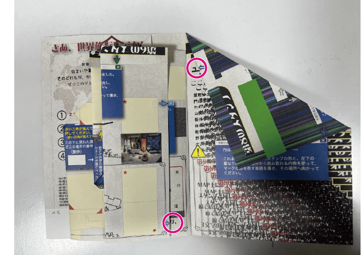
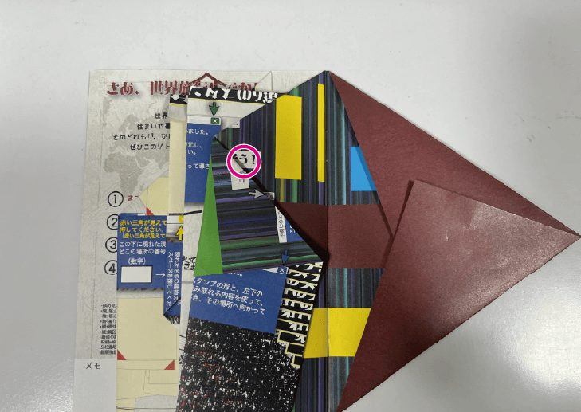
しかし、このキーワードは8文字しかない。
クリアキーワードは9文字あるはずだが、どこかに見落としたエラーはないだろうか…？
まずは地図の「！」が示す場所で追加キットを入手しよう。
パラレルワールドから脱出するための手がかりが手に入る。
手がかりを読むと、ただキーワードを報告するだけでは脱出できないようだ。
冊子に描かれている報告欄の枠線、字体などの細かい特徴に着目し、同じものが冊子以外の紙に無いか探してみよう。